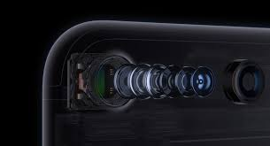
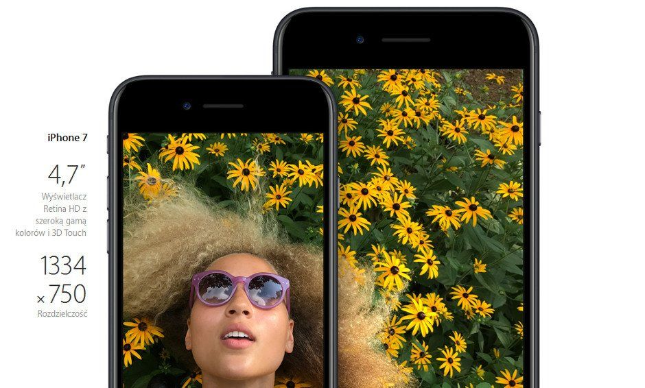
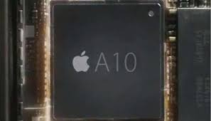

Dodano stabilizacjê obrazu, przys³onê f/1.8 oraz szeœcioelementowy obiektyw pozwalaj¹cy robiæ lepsze zdjêcia i filmy w gorszym oœwietleniu. A dziêki zaawansowanym nowym funkcjom takim jak szeroka gama kolorów zarówno tradycyjne fotografie, jak i zdjêcia Live Photo s¹ ¿ywsze i zwyczajnie piêkniejsze.
iPhone 7 wykorzystuje optyczn¹ stabilizacjê obrazu, redukuj¹c rozmycia powodowane ruchem aparatu lub dr¿eniem r¹k fotografa. Specjalny czujnik pomaga obiektywowi zniwelowaæ najdrobniejsze drgania, pozwalaj¹c nawet trzykrotnie wyd³u¿yæ czas ekspozycji w porównaniu z iPhonem 6s.
Wiêkszy otwór przys³ony przepuszcza do matrycy nawet 50 procent wiêcej œwiat³a w porównaniu z iPhonem 6s, u³atwiaj¹c robienie doskona³ych zdjêæ przy s³abym oœwietleniu. A poniewa¿ aparat ma te¿ nowy, szeœcioelementowy obiektyw, wszystkie ujêcia s¹ bardziej wyraziste i bogatsze w szczegó³y.
Cztery inteligentne diody LED generuj¹ o 50 procent jaœniejszy b³ysk ni¿ flesz iPhone'a 6s. Jasnoœæ automatycznie dostosowuje siê do temperatury barw otoczenia, dziêki czemu zdjêcia s¹ ostrzejsze i lepiej naœwietlone.
Iphone swoje filmy rejstruje w 4K i ze stabilizjacj¹ obrazu.Jest równiez mo¿liwoœæ nagrywania filmów w zwolnionym tempie w rozdzielczoœci HD lub FULL HD
Aparat posiada te¿ 12 Mpx oraz 2 obiektywny zapewniaj¹ce zoom optyczny x2

3. Wyœwietlacz
Wyœwietlacz Iphone 7 to Retina HD (1334x720), natomiast Iphone 7 s posiada rozdzielczoœæ FULL HD, wzbogacony o szerok¹ game kolorów i 3D Touch

4. Procesor
Przeprojektowany czterordzeniowy procesor A10 Fusion zbudowany jest z dwóch ultraszybkich i dwóch wysoce efektywnych energetycznie rdzeni. Ultraszybkie dzia³aj¹ dwa razy bystrzej ni¿ iPhone 6, a wysoce wydajne pracuj¹, zu¿ywaj¹c zaledwie 20 procent energii wykorzystywanej przez dwa pozosta³e rdzenie. Oznacza to, ¿e dysponujesz najwy¿sz¹ wydajnoœci¹ oraz najwy¿sz¹ energooszczêdnoœci¹ zawsze, gdy ich potrzebujesz.
Dziêki czipowi A10 Fusion po ³adowarkê bêdziesz odt¹d siêgaæ rzadziej ni¿ dotychczas. iPhone 7 oferuje nawet o dwie, a iPhone 7 Plus o jedn¹ godzinê wiêcej pracy na baterii ni¿ modele poprzedniej generacji.
